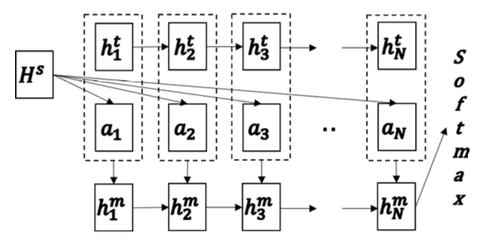

SeqMatchSeq
Updated:
This post introduces the paper “Learning Natural Language Inference with LSTM” [1]. This new neural model was proposed to deal with Natural Language Inference (NLI) task.
NLI Task
NLI task is to determine whether a hypothesis can be inferred from a premise. In 2015 Stanford Natural Language Inference (SNLI) corpus [2] was released (Link). The size of 570K sentence pairs makes it possible to train deep neural network models.
Architecture
The overview of architecture is given in Figure 1. This model once again makes use of the attention mechanism.

Figure 1 is from [1]
First, premise and the hypothesis are processed by 2 LSTMs. $\vec{h}_{j}^{s}$ and $\vec{h}_{k}^{t}$ denote these hidden states respectively.
$$
\vec{h}_{j}^{s} = \mbox{LSTM}( \vec{x}_{j}^{s}, \vec{h}_{j-1}^{s})
$$
$$
\vec{h}_{k}^{t} = \mbox{LSTM}( \vec{x}_{k}^{t}, \vec{h}_{k-1}^{t})
$$
Next, attention vectors $a_{k}$ is generated.
$$
e_{kj} = \vec{w}^{e}\tanh(\vec{W}^{s}\vec{h}_{j}^{s} + \vec{W}^{t}\vec{h}_{k}^{t} + \vec{W}^{m}\vec{h}_{k-1}^{m})
$$
$$
\alpha_{kj}=\mbox{softmax}(e_{kj}) \quad j \in (1,…,n)
$$
$$
\vec{a}_{k} = \sum_{j=1}^{n} \alpha_{kj}\vec{h}_{j}^{s}
$$
where $\vec{h}_{j}^{s}$ is from premise LSTM, $\vec{h}_{k}^{t}$ is from hypothesis LSTM, and $\vec{h}_{k}^{m}$ is from a LSTM (match-LSTM)
$$
\vec{h}_{k}^{m} = \mbox{LSTM}( \vec{x}_{k}^{m}, \vec{h}_{k-1}^{m})
$$
whose input is
$$
\vec{x}_{k}^{m} = [ \vec{a}_{k} , \vec{h}_{k}^{t} ]
$$
To predict label y, the last state $\vec{h}_{N}^{m}$ is used.
Analysis
The authors attributed the fine performance to that the match-LSTM is able to remember important mismatches and forgets good matching results. If no important mismatch occurred, the final classifier will likely predict entailment by default.
Implementation Details
- Adam optimization with $\beta_{1}$ set to 0.9 and $\beta_{2}$ set to 0.999.
- The initial learning rate is set to be 0.001 with a decay ratio of 0.95 for each iteration.
- Batch size is set to be 30.
- The unseen word is approximated by average over surrounding words(4 on the left and 4 on the right)
Comments
- The model turned out to be more like Seq2Seq with attention model in [4] compared with the model in [3]. In the view of Seq2Seq with attention, premise is encoded into memory for later query. During decoding, the attention and hypothesis hidden state are concatentated as new input.
References
[1] Shuohang Wang et al. Learning Natural Language Inference with LSTM. 2016
[2] Samuel R Bowman et al. A large annotated corpus for learning natural language inference. 2015
[3] Tim Rocktaschel et al. Reasoning about entailment with neural attention. 2015
[4] Dzmitry Bahdanau et al. Neural machine translation by jointly learning to align and translate. 2015